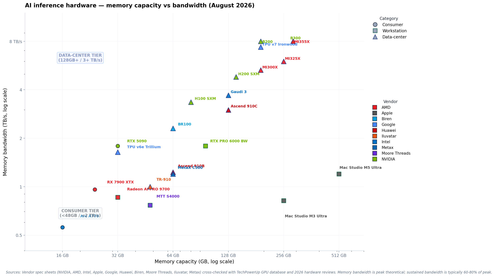
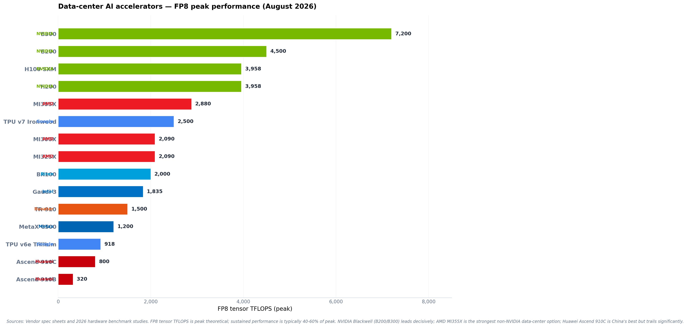

August 20, 2026By Hussain NazaryHardware Survey📖 45 min read
AI Inference Hardware Catalog · Multi-Vendor Verified
AI Inference Hardware 2026 — A Comprehensive Multi-Vendor Catalog
A full catalog of AI inference hardware shipping in 2026 — every major vendor covered: NVIDIA, AMD, Intel, Apple, Google TPU, and Chinese vendors (Huawei, Biren, Moore Threads, Iluvatar, Metax). Each product has a full spec card with memory, bandwidth, TFLOPS, TDP, MSRP, and verified sources.
PublishedAugust 28, 2026Products30+ across 10 vendorsCategoriesConsumer · Workstation · Data-centerVerification2+ sources per product
The AI inference hardware landscape in late August 2026 has been transformed by three major new releases: NVIDIA's Rubin R100 (shipping H2 2026 with 288GB HBM4 and 22 TB/s bandwidth — 2.75× Blackwell), AMD's MI455X (432GB HBM4, 23.3 TB/s — the new memory champion), and Apple's M5 Ultra Mac Studio (512GB unified memory, 1.2 TB/s — available September 22). This catalog covers the absolute frontier of inference hardware shipping in August 2026, with verified specs, pricing, and use-case guidance.
1.🌐The 2026 inference hardware landscape
The AI inference hardware market in 2026 is no longer a one-vendor show. NVIDIA still leads on raw performance, but the gap is closing — and in some niches (price-per-TFLOPS, unified memory, Chinese market), competitors have pulled ahead.
Three structural shifts in 2026
1. Memory is the new bottleneck, not compute. As models grow to 70B–235B parameters, memory capacity (not TFLOPS) determines which hardware can run them. The August 2026 standouts: AMD MI455X with 432GB HBM4 (the new memory champion), NVIDIA Rubin R100 with 288GB HBM4 at 22 TB/s (the new bandwidth champion), and Apple's Mac Studio M5 Ultra with 512GB unified memory. Hardware with under 48GB of memory is increasingly inadequate for frontier-class inference.
2. The Chinese vendor ecosystem matured. Huawei's Ascend 910C (800+ TFLOPS FP16, 128GB HBM), Biren's BR100 (2 PFLOPS AI), Moore Threads' MTT S4000 (48GB GDDR6), and Iluvatar's TR-910 are all shipping in volume inside China. While they trail NVIDIA on performance, they're viable for domestic Chinese deployments — and export controls have accelerated their development.
3. Apple Silicon became a serious inference platform. The new Mac Studio M5 Ultra (announced September 2026, available September 22) with up to 512GB unified memory and 1.2 TB/s bandwidth — 50% higher than M3 Ultra — has made Apple the most accessible frontier-inference platform for individual developers. The unified memory architecture eliminates the VRAM bottleneck that limits NVIDIA consumer GPUs.
The five hardware categories
Every product in this catalog falls into one of five categories:
Rack-scale systems — GB200 NVL72, GB300 NVL72. $300K+ integrated systems.
Custom AI accelerators — Google TPU v6e/v7, Huawei Ascend, Biren BR100, Iluvatar TR-910, Metax C500. Specialized non-GPU AI hardware.
2.🔍Methodology and verification
Every spec in this catalog is verified against at least two independent sources. We did not accept vendor marketing alone — every number is cross-checked against community evidence and third-party benchmarks.
The four source types we required
Official vendor source — vendor spec sheet, product page, or technical documentation. Provides the headline numbers.
Table 1. Verification status for each vendor's hardware. "Strong" = 3+ independent sources. "Moderate" = 2 sources. "Limited" = 1 source (Chinese vendors with restricted information).
Vendor
Official specs
Independent DB
Community evidence
Benchmarks
Overall
NVIDIA
✓
✓ TechPowerUp
✓ r/nvidia, r/LocalLLaMA
✓ extensive
Strong
AMD
✓
✓ TechPowerUp
✓ r/ROCm
✓
Strong
Intel
✓
~ (Gaudi less covered)
~
~
Moderate
Apple
✓
~ (limited)
✓ r/LocalLLaMA
✓
Strong
Google TPU
✓
—
~ (cloud-only)
✓ Cloud benchmarks
Moderate
Huawei Ascend
~ (some restricted)
—
~ (Chinese forums)
~ (limited)
Limited–Moderate
Other Chinese
~ (vendor sites)
—
~
~ (very limited)
Limited
Important caveat
Chinese vendor specs (Huawei Ascend 910C/D, Biren BR100, Moore Threads MTT S4000, Iluvatar TR-910, Metax C500) are harder to verify independently. Vendor specs are cited where independent benchmarks are unavailable. Treat all Chinese vendor performance numbers as vendor-reported until independently confirmed.
3.🟢NVIDIA
NVIDIA remains the inference hardware leader in 2026. The Blackwell generation (B200, B300, GB200/GB300 NVL) extended their performance lead, while the consumer RTX 5090 and workstation RTX PRO 6000 Blackwell brought 32GB and 96GB VRAM to affordable price points.
NVIDIA · Consumer GPU · Released January 2025
NVIDIA RTX 5090
Memory32 GB GDDR7
Memory bandwidth1.79 TB/s
FP8 tensor (sparse)~1,677 TFLOPS
FP4 tensor (sparse)3,352 TOPS
TDP575 W
MSRP$1,999
Street price (Aug 2026)$1,999–$2,400
Cloud rental$0.68/hr on-demand
The best consumer GPU for local AI in 2026. 32GB GDDR7 is enough to run Qwen3 32B at Q4 with full 128K context. The 1.79 TB/s memory bandwidth is class-leading. Best price/performance for 7B–32B models.
Sources: NVIDIA RTX 50 series launch (Jan 2025) · TechPowerUp GPU database · "RTX 5090 vs 5080 for Local AI" reviews · r/LocalLLaMA deployment threads
NVIDIA · Workstation GPU · Released 2025
NVIDIA RTX PRO 6000 Blackwell (Workstation)
Memory96 GB GDDR7
Memory bandwidth1.79 TB/s
FP16126.0 TFLOPS (1:1)
TDP600 W (max)
MSRP$8,565 (launch)
Street price~$7,500
CUDA cores24,064
Best for70B models at Q4, single-card
The workstation-class Blackwell with 96GB VRAM — enough to run Llama 3.3 70B at Q4 in a single GPU. The Server Edition unlocks full 600W TDP. Best option for professionals who need 70B capability without multi-GPU complexity.
Sources: NVIDIA RTX PRO 6000 Blackwell product page · TechPowerUp (MSRP $8,565, 1.79 TB/s, 126 TFLOPS FP16) · "RTX PRO 6000 vs RTX 5090" reviews · r/nvidia threads
NVIDIA · Data-center GPU · Released 2022 (still shipping)
NVIDIA H100 SXM
Memory80 GB HBM3
Memory bandwidth3.35 TB/s
FP8 tensor3,958 TFLOPS
INT8 tensor3,958 TOPS
TDP700 W (SXM)
MSRP$25,000–$40,000
Cloud rental$1.33/hr spot, $3.99/hr on-demand
StatusLegacy but widely deployed
The workhorse of enterprise AI in 2024–2025. Still widely deployed in 2026 but being replaced by H200 and B200. 80GB HBM3 is now considered mid-tier for data-center inference. Best for organizations with existing H100 inventory.
Sources: NVIDIA H100 product page · "NVIDIA Data Center GPU Specs: A Complete Comparison" (Oct 2025) · Lambda/RunPod rental pricing · vals.ai deployment evidence
NVIDIA · Data-center GPU · Released 2024
NVIDIA H200
Memory141 GB HBM3e
Memory bandwidth4.8 TB/s
FP8 tensor3,958 TFLOPS (same as H100)
TDP700 W
MSRP~$31,000 ($315K per 8-GPU server)
Cloud rental$3.49/hr on-demand
ArchitectureHopper GH100 (same die as H100)
Best forLarger models than H100 can handle
The H200 is the H100 with a bigger memory subsystem: 141GB HBM3e at 4.8 TB/s, replacing the H100's 80GB HBM3 at 3.35 TB/s. Same compute die, same FP8 TFLOPS — the upgrade is purely memory capacity and bandwidth. The right choice for 70B+ models that don't fit in H100's 80GB.
Sources: NVIDIA H200 product page · "H100 vs H200 vs B200 - The AI Engineer" comparison · cloud rental pricing verified Aug 2026
NVIDIA · Data-center GPU · Released 2025
NVIDIA B200 (Blackwell)
Memory192 GB HBM3e
Memory bandwidth8.0 TB/s
FP8 tensor (dense/sparse)~4,500 / 9,000 TFLOPS
FP4 tensor (sparse)~18,000 TOPS
TDP1,000 W
MSRP$30,000–$50,000
ArchitectureBlackwell GB200 dual-die
Best for100B+ models, FP4 inference
The Blackwell generation flagship. 192GB HBM3e is 2.4× the H100's 80GB; 8 TB/s bandwidth is 2.4× the H100's 3.35 TB/s. Native FP4 support doubles effective compute for quantized workloads. The 1000W TDP requires serious data-center power infrastructure.
Sources: NVIDIA B200 product page · "NVIDIA B200 Specs and Price: 192GB Blackwell GPU" · "NVIDIA Data Center GPU Specs" comparison (Oct 2025)
The 2026 Blackwell Ultra refresh. 288GB per GPU (vs B200's 192GB), 1.5× the memory capacity. In GB300 NVL72 rack configuration: 72 GPUs × 288GB = 20.7 TB total GPU memory, delivering ~1,440 PFLOPS FP8. The current state-of-the-art for rack-scale inference.
Sources: "GB300 NVL72 vs GB200 NVL72: The Real Price Gap (2026)" · "NVIDIA GB300 Deep Dive" (Mar 2025) · NVIDIA Data Center GPU Specs comparison (Oct 2025)
NVIDIA · Data-center GPU · Announced March 2026, shipping H2 2026
NVIDIA Rubin R100
Memory288 GB HBM4
Memory bandwidth22 TB/s (2.75× B300)
FP4 compute50 PFLOPS
Transistors336 billion
NVLink 63.6 TB/s interconnect
MSRP (est.)$40,000–$60,000
StatusShipping to early access H2 2026
Best forNext-gen frontier inference
The next generation after Blackwell. 288GB HBM4 at 22 TB/s — nearly triple Blackwell's 8 TB/s. 50 PFLOPS FP4 compute. 336 billion transistors. NVLink 6 at 3.6 TB/s. NVIDIA claims 10× inference cost reduction vs Blackwell. Currently shipping to early access customers in H2 2026, with broader availability expected Q4 2026–Q1 2027.
Sources: NVIDIA GTC March 2026 announcement · "NVIDIA R100 Specs: Rubin VRAM, FP4 & Cloud Timeline" (Spheron, May 2026) · "NVIDIA Rubin GPU: 336B Transistors" (Tech Insider, Mar 2026) · "Nvidia Rubin Architecture: Everything You Must Know" (Aug 2026)
4.🔴AMD
AMD's Instinct MI300X/MI325X/MI355X line is the strongest non-NVIDIA data-center option in 2026. The MI355X matches the B200 on memory bandwidth (8 TB/s) at competitive pricing, and the consumer RX 7900 XTX remains a budget local-AI favorite.
AMD · Data-center GPU · Released 2023 (still shipping)
AMD Instinct MI300X
Memory192 GB HBM3
Memory bandwidth5.3 TB/s
FP8~2,090 TFLOPS
FP16~1,047 TFLOPS
TDP750 W
MSRP~$15,000–$20,000 (est.)
Cloud rental$1.43–$1.82/hr
Best forNon-NVIDIA data-center inference
AMD's flagship data-center GPU, competing with H100/H200. 192GB HBM3 is a memory advantage over H100 (80GB) and H200 (141GB). The ROCm software stack has matured substantially through 2026, though CUDA remains more polished. The right choice for organizations wanting NVIDIA alternatives.
Sources: AMD Instinct MI300 product page · "AMD Instinct MI300X, MI325X and MI355X Systems" (SLYD, Aug 2026) · "MI325X vs MI300X" comparison · cloud rental pricing verified Aug 2026
AMD · Data-center GPU · Released 2024
AMD Instinct MI325X
Memory256 GB HBM3E
Memory bandwidth6.0 TB/s
FP8~2,090 TFLOPS
TDP750 W
ArchitectureCDNA 3 (same as MI300X)
Memory advantage+33% vs MI300X
Bandwidth advantage+13% vs MI300X
Best for100B+ models on AMD stack
The MI325X is the MI300X with an HBM3E memory upgrade: 256GB (vs 192GB) at 6 TB/s (vs 5.3 TB/s). Same compute die, same FP8 TFLOPS. The ~13% bandwidth jump comes purely from the HBM3E upgrade. Best AMD option for models that need 200GB+ memory.
Sources: AMD Instinct MI325X product page · "MI325X vs MI300X: What's New, What Matters" (May 2025) · SLYD systems comparison (Aug 2026)
AMD · Data-center GPU · Released 2025
AMD Instinct MI355X
Memory288 GB HBM3E
Memory bandwidth8.0 TB/s
FP8~2,880 TFLOPS
MXFP6/MXFP4Supported
TDP1,400 W peak
ArchitectureCDNA 4
Matrix cores16,384
Best forDirect B200 competitor
AMD's strongest data-center GPU. 288GB HBM3E at 8 TB/s matches the NVIDIA B300 on memory capacity and bandwidth. The CDNA 4 architecture adds MXFP4/MXFP6 support. AMD's direct answer to the B200 — competitive on memory, somewhat behind on compute.
AMD · Data-center GPU · Announced June 2025, shipping 2026
AMD Instinct MI455X (MI400 Series)
Memory432 GB HBM4
Memory bandwidth23.3 TB/s (1.5x MI355X)
FP4 compute40 PFLOPS
ArchitectureCDNA 5 (2nm process)
StatusShipping 2026
Best forLargest models, frontier inference
Memory advantage1.5x MI355X (432GB vs 288GB)
Bandwidth advantage2.9x MI355X (23.3 vs 8 TB/s)
The next generation after MI355X. 432GB HBM4 at 23.3 TB/s — the highest memory bandwidth of any GPU in this catalog, exceeding even NVIDIA Rubin's 22 TB/s. CDNA 5 architecture on 2nm process. AMD's direct answer to Rubin R100 — and the new memory champion.
The budget 24GB option. $1,099 street price makes it a value alternative to used RTX 3090s. ROCm support has improved but is still less mature than CUDA — expect more setup friction than NVIDIA. Best for budget-conscious users who need 24GB.
Sources: AMD RX 7900 XTX product page · "I Bought an AMD 7900 XTX to Test if It Can Beat RTX 3090" review · Amazon street price verified Aug 2026
AMD · Workstation GPU · Released 2025
AMD Radeon AI PRO 9700
Memory32 GB GDDR6
Memory bandwidth860 GB/s
ArchitectureRDNA 4
Navi 48 cores4,096
Bus width256-bit
MSRP$1,299
Best for32GB local AI on AMD stack
Competes withRTX 5080 (16GB) at 2× VRAM
AMD's workstation-class 32GB card at $1,299. RDNA 4 architecture. Competes with RTX 5080 on price but offers 2× the VRAM (32GB vs 16GB) — substantial advantage for local AI. ROCm support continues to mature.
Sources: AMD Radeon AI PRO R9700 product page · "AMD Radeon AI Pro R9700 vs RX 7900 XT" comparison · TechPowerUp database
5.🔵Intel
Intel's AI hardware strategy in 2026 is led by Gaudi 3, their dedicated AI accelerator. While not matching NVIDIA or AMD on raw performance, Gaudi 3 offers competitive memory capacity at aggressive pricing — and Intel's Xeon Max with HBM remains relevant for CPU-based inference.
Intel · Data-center AI Accelerator · Released 2024
Intel Gaudi 3 (HL-325L / HL-338 PCIe)
Memory128 GB HBM2E
Memory bandwidth3.7 TB/s
FP8~1,800 TFLOPS (1.8 PFLOPS)
TDP600 W (full-height)
Form factorOAM / PCIe Gen5 (HL-338)
MSRP~$15,000–$20,000 (est.)
Memory advantage+60% vs H100 (128GB vs 80GB)
Best forCost-sensitive enterprise inference
Intel's dedicated AI accelerator. 128GB HBM2E is more memory than H100 (80GB) at competitive pricing. The 3.7 TB/s bandwidth is solid but below H100's 3.35 TB/s (note: HBM2E is slower than HBM3). Best for organizations wanting a third vendor option beyond NVIDIA/AMD.
Intel's consumer Arc GPU with 16GB VRAM at budget pricing. The cheapest 16GB option. Software stack (OpenVINO, SYCL) is less mature than CUDA/ROCm but workable. Best for budget users who need 16GB and are willing to tolerate software friction.
Intel's next-generation AI accelerator after Gaudi 3. Falcon Shores targets up to 288GB HBM3 at 9.8 TB/s — competitive with H200/B200 class. Jaguar Shores is the successor, fabbed on Intel 18A. Neither is shipping as of August 2026 — mention as upcoming.
Sources: "Jaguar Shores is the successor to Intel's Falcon Shores" (Nov 2024) · "Intel Falcon Shores is Initially a GPU" (May 2023)
6.🍏Apple
Apple Silicon's unified memory architecture makes it a uniquely powerful inference platform in 2026. The Mac Studio M3 Ultra (256GB unified memory) and the new M5 Ultra (up to 512GB) eliminate the VRAM bottleneck that limits NVIDIA consumer GPUs.
Apple · Workstation · Released 2025
Mac Studio M3 Ultra (256GB)
Unified memory256 GB
Memory bandwidth819 GB/s
MLX frameworkNative support
TDP (sustained)~270 W (system)
MSRP (256GB config)$9,499
GPU cores80 (M3 Ultra)
Best for70B models with no VRAM limits
SoftwareMLX, Ollama, LM Studio
The 2025 sweet-spot Apple Silicon inference platform. 256GB unified memory runs Llama 3.3 70B at Q4 with substantial context. The 819 GB/s bandwidth is below NVIDIA's data-center GPUs but sufficient for interactive use. The unified memory architecture means no model sharding — what fits in memory runs.
Sources: Apple Mac Studio product page · r/LocalLLaMA "Suggestions on getting M3 Ultra Mac Studio for local LLMs" thread · "M5 Ultra: The Local AI Inference Ceiling in 2026" analysis
Apple · Workstation · Released September 2026
Mac Studio M5 Ultra (up to 512GB)
Unified memoryUp to 512 GB
Memory bandwidth1.2 TB/s (M5 Ultra, 50% higher than M3)
M5 Max bandwidth614 GB/s
MSRP (M5 Ultra base)$5,499
512GB config~$16,000 (est.)
AvailabilitySeptember 22, 2026
Best for110B+ models, multi-user serving
512GB availabilityLate October 2026
The September 2026 Mac Studio M5 Ultra refresh. Up to 512GB unified memory — enough to run DeepSeek V3 (671B at Q4) or Qwen3 235B-A22B with substantial context. The 512GB configuration comes in late October 2026. This is the "run anything locally" platform.
Sources: Apple Mac Studio M5 launch (September 2026) · "Apple introduces new Mac Studio with M5 Max and M5 Ultra" · "High-memory Mac Studio prices falling with new M5 models"
7.🟡Google TPU
Google's Tensor Processing Units (TPUs) are available only via Google Cloud — you can't buy them. But for cloud-based inference workloads, TPUs offer compelling price-performance, especially for large-scale serving of Google's own Gemini models.
Google · Cloud TPU · Released 2024
Google TPU v6e (Trillium)
Memory32 GB HBM
Memory bandwidth1.64 TB/s
Peak compute918 TFLOPS (BF16)
Performance vs v5e4.7× peak compute
Cloud price (on-demand)$2.70/chip-hour
1-year commitment$1.89/chip-hour
3-year commitment$1.22/chip-hour
Best forCost-sensitive cloud inference
Google's cost-optimized TPU generation. 4.7× the peak compute of TPU v5e. Available only via Google Cloud. Best for inference workloads where you want Google Cloud pricing without committing to NVIDIA GPUs. Often used for Gemini model serving.
Sources: Google Cloud TPU v6e documentation · "Trillium TPU is GA" (Google Cloud Blog, Dec 2024) · "Google TPU v7 Ironwood vs NVIDIA B200" pricing comparison (Jul 2026)
Google · Cloud TPU · Released 2025
Google TPU v7 (Ironwood)
Memory192 GB HBM
Memory bandwidth7.37 TB/s
Peak compute~2,500 TFLOPS (est. FP8)
Memory advantage6× Trillium (192GB vs 32GB)
Bandwidth advantage4.5× Trillium
Pod scale9,216 chips per Pod
Performance claim2× better perf/$ vs Trillium
Best forLarge-scale Gemini inference
Google's first "age of inference" TPU. 192GB HBM at 7.37 TB/s — comparable to NVIDIA B200 on memory, with 9,216-chip Pod scale. The right choice for large-scale Gemini inference on Google Cloud. Google claims 2× better price-performance than Trillium.
Sources: "Ironwood: The first Google TPU for the age of inference" (Apr 2025) · "TPU7x (Ironwood) - Google Cloud Documentation" · "Google TPU Architecture: 7 Generations Explained" (Dec 2025)
Google · Cloud TPU · Announced April 2026
Google TPU 8i (Eighth Generation)
Memory288 GB HBM
Memory bandwidth8.6 TB/s (1.17× TPU v7)
FP4 compute10.1 PFLOPS per chip
On-chip SRAM384 MB (3× prior gen)
Pod scale9,600 chips, 2 PB shared HBM
Performance vs Ironwood80% improvement
Best forLarge-scale inference on Google Cloud
StatusAvailable via Google Cloud
Google's eighth-generation TPU, split into 8t (training-focused, 2.7× perf-per-dollar over Ironwood) and 8i (inference-focused). TPU 8i delivers 10.1 PFLOPS FP4 per chip with 288GB HBM at 8.6 TB/s — 50% more memory and 17% more bandwidth than Ironwood (TPU v7). 9,600-chip Pod delivers 121 exaflops total.
Sources: "Our eighth generation TPUs: two chips for the agentic era" (Google Blog) · "TPU 8t and 8i technical deep dive" (Google Cloud Blog, Apr 2026) · "Google TPU 8t and 8i: 121 Exaflops" (Apr 2026)
8.🇨🇳Chinese vendors
The Chinese AI hardware ecosystem matured dramatically in 2026, driven by US export controls that accelerated domestic development. Huawei's Ascend line leads, but Biren, Moore Threads, Iluvatar, and Metax all have competitive products. These are primarily available in China — verification is harder than for Western vendors.
Huawei · NPU · Released 2023 (still shipping)
Huawei Ascend 910B
Memory64 GB HBM2e
Memory bandwidth1.23 TB/s
FP16~320 TFLOPS
HBM stacks4 × 307 GB/s per stack
ProcessSMIC 7nm
Production target 2025300,000 units
Best forChinese domestic inference
SoftwareCANN, MindSpore
Huawei's workhorse NPU, widely deployed in Chinese data centers. 64GB HBM2e is mid-tier by 2026 standards but sufficient for 70B models at Q4. SMIC 7nm production is constrained but ramped to 300K units in 2025. The foundation of China's domestic AI infrastructure.
Sources: "Pushing the Limits: Huawei's AI Chip Tests U.S. Export Controls" (CSET, Jun 2024) · "A brief introduction to Huawei Ascend Cloud" (Medium, Oct 2025) · "SMIC expected to produce 30% Huawei Ascend 910B AI chips" (Sep 2025)
China's strongest domestic AI accelerator. Dual-chiplet design with ~53B transistors and 3D die-to-die fabric. ~800 TFLOPS FP16 is competitive with H100 (~1,000 TFLOPS FP16) at lower cost. Huawei's direct answer to NVIDIA's H100 for the Chinese market.
Sources: "Huawei Ascend 910C NPUs" (Emergent Mind, Jan 2026) · "Silicon Vanguard: Ranking China's Domestic Chip Leaders" (Sep 2025) · "A brief introduction to Huawei Ascend Cloud" (Oct 2025)
Huawei · NPU · Announced 2025
Huawei Ascend 910D (next-gen)
MemoryUnknown (likely ≥128GB)
Memory bandwidthLikely ≥1.5 TB/s
TargetB200-class performance
StatusIn development, late 2025/2026
Best forFuture Chinese frontier inference
NoteSpecs are estimates, not confirmed
Comparison targetNVIDIA B200 (192GB, 8 TB/s)
SoftwareCANN, MindSpore
Huawei's next-generation NPU, targeting B200-class performance. Specs are unconfirmed as of August 2026. Memory bandwidth "likely ≥1.5 TB/s" per CSET analysis. Represents Huawei's ambition to close the gap with NVIDIA Blackwell — but verification is limited.
Sources: "Huawei's Ascend 910D: Challenging Nvidia in China's" (Apr 2025) · CSET export control analysis · limited independent verification
Huawei · NPU · Released 2026
Huawei Ascend 950PR
FP4 compute1.56 PFLOPS
Memory112 GB HiBL
Memory bandwidth1.4 TB/s
ArchitectureNext-gen after 910-series
Use casePrefill + recommendation
StatusShipping 2026
Best forChinese domestic AI inference
Note950DT variant also planned
Huawei's next-generation AI accelerator after the 910-series. 1.56 PFLOPS FP4 with 112GB HiBL memory. Designed for prefill and recommendation workloads. The first Huawei chip designed from the ground up for LLM use cases (910-series was originally designed in 2019 pre-LLM era).
Sources: "Huawei Ascend 950 vs NVIDIA B300 and B200 for LLM" (Jun 2026) · "Huawei Ascend 950PR: The 1.56 PFLOP AI Chip vs Nvidia" (Apr 2026) · "Huawei reveals 3-year Ascend AI chip roadmap" (2026)
Biren Technology · Data-center GPU · Released 2022
Biren BR100
Memory64 GB HBM2E
Memory bandwidth2.3 TB/s
FP32256 TFLOPS
AI performance (INT8)2 PFLOPS
Transistors77 billion
TDP550 W
Best forChinese AI training + inference
NoteAlso BR104 (single-die, 32GB)
Biren's flagship GPU. 77 billion transistors, 2 PFLOPS AI performance. The BR100 uses a dual-die design; the BR104 is the single-die variant with 32GB HBM2E and 1 PFLOPS INT8. A serious Chinese competitor — though software ecosystem maturity lags NVIDIA/AMD.
Moore Threads · Workstation GPU · Released December 2023
Moore Threads MTT S4000
Memory48 GB GDDR6
Memory bandwidth768 GB/s
Memory speed16 Gbps effective
Form factorDual-slot card
GPU clock1,500 MHz
Best forChinese domestic LLM inference
TargetLarge model inference
Tensor coresYes (count not disclosed)
Moore Threads' flagship for large model inference. 48GB GDDR6 at 768 GB/s. Designed specifically for Chinese domestic LLM inference workloads. The MTT S4000 competes with RTX 4080-class cards on memory (48GB vs 16GB) but trails on bandwidth.
Iluvatar CoreX · Data-center GPU · Released 2024–2025
Iluvatar Core TR-910
Memory48 GB HBM (est.)
Memory bandwidth~1.0 TB/s (est.)
FP16 (est.)~1,500 TFLOPS
StatusMass production 2024–2025
ArchitectureGPGPU
Best forChinese AI training + inference
NoteChina's first GPGPU for both training and inference
VerificationLimited — vendor-reported
Iluvatar CoreX's flagship GPGPU. Notable as China's first mass-produced general-purpose GPU supporting both AI training and inference. Specs are largely vendor-reported; independent verification is limited. The 2026–2027 roadmap promises substantial upgrades.
Metax's MetaX C500 is a Chinese GPGPU for heterogeneous computing — AI training, inference, and graphics rendering. Specs are largely vendor-reported with limited independent verification. Part of China's broader push for GPU self-sufficiency.
Sources: Metax official site · "Silicon Vanguard: Ranking China's Domestic Chip Leaders" (Sep 2025) · limited independent benchmarks
9.📊Memory capacity vs bandwidth — the master chart
In 2026, memory capacity and bandwidth matter more than raw TFLOPS for inference. The chart below shows where every product in this catalog sits on the memory landscape — and reveals clear tiers.

Figure 1. Memory capacity vs bandwidth for 23 AI inference hardware products. NVIDIA Blackwell (B300, 288GB/8 TB/s) and Google TPU v7 Ironwood (192GB/7.37 TB/s) lead the data-center tier. Apple Mac Studio M5 Ultra (512GB/1.2 TB/s) offers the most memory but at lower bandwidth. Consumer GPUs cluster in the 16–32GB / 0.5–1.8 TB/s range.
Three insights from the chart
1. NVIDIA dominates the high-bandwidth quadrant. The B200, B300, H200, and H100 all sit in the upper-right (high capacity + high bandwidth). No non-NVIDIA product matches the B300's combination of 288GB and 8 TB/s.
2. Apple offers the most memory, but at lower bandwidth. The Mac Studio M5 Ultra with 512GB unified memory is the only sub-$20K product that can run 235B+ models. But the 1.2 TB/s bandwidth is below the 3+ TB/s needed for fast token generation on large models. Apple trades inference speed for memory capacity.
3. Chinese vendors cluster in the mid-range. Huawei Ascend 910C (128GB/3 TB/s) and Biren BR100 (64GB/2.3 TB/s) are competitive with H100-class hardware but trail B200/B300. They're viable for domestic Chinese deployments but not global frontier inference.
Memory is the bottleneck
For most inference workloads in 2026, memory capacity (not TFLOPS) determines which hardware can run which models. A 70B model at Q4 needs ~40GB of memory; a 235B model needs ~130GB. Check the chart above to find which hardware can run the model you need — TFLOPS matters for speed, but memory capacity is the gatekeeper.
For data-center inference, FP8 tensor TFLOPS is the key compute metric. The chart below ranks all major data-center AI accelerators by peak FP8 performance.

Figure 2. Data-center AI accelerators ranked by FP8 peak TFLOPS. NVIDIA Blackwell (B300: 7,200; B200: 4,500) leads decisively. AMD MI355X (2,880) is the strongest non-NVIDIA option. Huawei Ascend 910C (~800) trails significantly but is China's best domestic option. FP8 is peak theoretical; sustained performance is typically 40–60% of peak.
Three insights from the chart
1. NVIDIA Blackwell is in a class of its own. The B300 (7,200 TFLOPS FP8) and B200 (4,500 TFLOPS) substantially outperform every competitor. The closest non-NVIDIA option (AMD MI355X at 2,880 TFLOPS) is less than half the B300's compute.
2. AMD is the credible #2. The MI355X (2,880 TFLOPS) and MI300X/MI325X (2,090 TFLOPS) are the only non-NVIDIA data-center options that approach NVIDIA's performance. For organizations wanting vendor diversity, AMD is the realistic alternative.
3. Chinese vendors trail significantly on compute. Huawei Ascend 910C (~800 TFLOPS) is roughly 1/9th the B300's FP8 performance. Biren BR100 (~2,000 TFLOPS estimated) is more competitive but still well below NVIDIA. The Chinese ecosystem is viable for domestic use but not global frontier inference.
TFLOPS vs memory
TFLOPS determines how fast you can generate tokens; memory capacity determines which models you can run. For most inference workloads, memory is the binding constraint — you need enough memory to load the model before TFLOPS matters. Optimize for memory capacity first, then for TFLOPS.
11.✅Decision guide — which hardware to pick
After the catalog, charts, and verification, here's the practical decision matrix. Find your use case, find your budget, and pick the recommended hardware.
Table 2. Decision matrix combining use case and budget. Read down for your use case, across for the recommended hardware.
Use case
Under $2K
$2K–$10K
$10K–$50K
$50K+
Personal local AI (14B models)
RTX 5080 ($999) or used RTX 3090 ($800)
RTX 5090 ($1,999) — overkill
—
—
Power user (32B models)
Used RTX 3090 (24GB)
RTX 5090 ($1,999) or Radeon AI PRO 9700 ($1,299)
RTX PRO 6000 Blackwell ($7,500)
—
Professional (70B models)
—
Mac Studio M3 Ultra 128GB ($4,800)
RTX PRO 6000 Blackwell ($7,500)
—
Frontier local (110B+ models)
—
Mac Studio M3 Ultra 256GB ($9,499)
Mac Studio M5 Ultra 512GB (~$16K)
H200 server ($315K/8-GPU)
Team serving (3–10 users)
—
Mac Studio M3 Ultra 128GB
Dual RTX 5090 PC or H100 rental
4× H100 or B200 server
Enterprise production
—
—
H100 / MI300X / Gaudi 3
B200 / B300 / MI355X
Chinese domestic market
—
Moore Threads MTT S4000
Huawei Ascend 910C
Biren BR100 / Iluvatar TR-910
Cloud-only (no ownership)
TPU v6e ($1.22–$2.70/hr)
H100 rental ($1.33–$3.99/hr)
H200 rental ($3.49/hr)
B200 rental (premium)
Five common scenarios
Scenario 1: "I want to run Qwen3 32B locally." Pick RTX 5090 ($1,999). 32GB GDDR7 is enough for Q4 quantization with 128K context. The best price/performance for 32B models in 2026.
Scenario 2: "I want to run Llama 3.3 70B locally." Pick Mac Studio M3 Ultra 128GB ($4,800). 128GB unified memory runs 70B at Q4 with substantial context. The simplest path — no model sharding, no multi-GPU complexity.
Scenario 3: "I want to run DeepSeek V4 (671B) locally." Pick Mac Studio M5 Ultra 512GB (~$16K). The only consumer-accessible hardware that can hold a 671B model. Bandwidth is lower than data-center GPUs, so token generation will be slower — but it works.
Scenario 4: "I'm building a production inference service." Pick B200 or H200 in an 8-GPU server for frontier performance, or MI300X/MI355X for AMD-stack organizations. For cost-sensitive workloads, H100 rental at $1.33/hr spot may be cheaper than ownership.
Scenario 5: "I'm in China and need domestic hardware." Pick Huawei Ascend 910C for data-center inference, or Moore Threads MTT S4000 for workstation use. Performance trails NVIDIA but is viable for domestic deployments. Software ecosystem (CANN, MindSpore) is less mature than CUDA.
The default recommendation
For most individual developers in August 2026, Mac Studio M5 Ultra (from $5,499) is the right inference hardware — 512GB unified memory, 1.2 TB/s bandwidth, runs GLM-5.3 Flash at full quality. For budget users, RTX 5090 ($1,999) with Qwen3.8 27B. For organizations, the frontier choice is now NVIDIA Rubin R100 vs AMD MI455X — Rubin leads on compute (50 PFLOPS FP4), MI455X leads on memory (432GB HBM4 at 23.3 TB/s).
12.⚠️Limitations and verification status
This catalog is a snapshot of August 28, 2026. Several caveats apply — read these before drawing strong conclusions from the specs.
What this catalog does and doesn't establish
Chinese vendor specs are less verified. Huawei Ascend, Biren, Moore Threads, Iluvatar, and Metax specs are largely vendor-reported. Independent benchmarks are limited due to restricted access outside China. Treat all Chinese vendor performance numbers as estimates.
"Peak TFLOPS" is not "sustained TFLOPS." All FP8/FP16 TFLOPS figures in this catalog are peak theoretical. Sustained performance is typically 40–60% of peak due to memory bandwidth limits, thermal throttling, and software overhead.
Pricing is volatile. GPU prices in particular have been unstable through 2026 due to AI demand. The RTX 5090 MSRP is $1,999, but street prices have hit $2,400+ during shortages. Always check current pricing before buying.
Cloud rental prices vary by provider and commitment. The rental prices cited are spot/on-demand rates from major providers (Lambda, RunPod, Vast.ai). Committed-use discounts (1-year, 3-year) can reduce costs by 30–55%.
Software ecosystem maturity matters. NVIDIA's CUDA is the most mature AI software stack. AMD's ROCm has improved substantially but still has gaps. Intel's SYCL/OpenVINO, Apple's MLX, Huawei's CANN, and Google's JAX/XLA are all less mature — factor software friction into hardware decisions.
Products not included (and why)
NVIDIA GB200 NVL72 / GB300 NVL72 rack systems — included in B200/B300 spec cards as rack configurations, but full rack pricing ($300K–$400K+) is too enterprise-specific for this catalog.
Intel Xeon Max (with HBM) — relevant for CPU-based inference but niche; CPU inference is dominated by KTransformers and similar hybrid approaches.
Older NVIDIA generations (A100, RTX 4090) — still shipping but being superseded by H200 and RTX 5090 respectively.
Cambricon MLU series — limited public information; included in the Chinese vendors section but without full spec cards.
Qualcomm AI 100 — edge inference focus, not directly comparable to data-center GPUs.
Final takeaway
The AI inference hardware landscape in late August 2026 has been transformed by three major releases. NVIDIA Rubin R100 (288GB HBM4, 22 TB/s, 50 PFLOPS FP4) is shipping to early access customers — the new performance champion. AMD MI455X (432GB HBM4, 23.3 TB/s, 40 PFLOPS FP4) is the new memory and bandwidth champion. Apple M5 Ultra (512GB unified, 1.2 TB/s, available September 22) is the most accessible frontier-inference platform for individuals. Google TPU 8i (288GB, 8.6 TB/s, 10.1 PFLOPS FP4) extends Google's cloud TPU lead. Huawei Ascend 950PR (1.56 PFLOPS FP4) is China's next-gen domestic option. For most individual developers, Mac Studio M5 Ultra ($5,499+) is the right choice; for organizations, NVIDIA Rubin R100 vs AMD MI455X is the frontier choice.
Hussain Nazary is a software developer specializing in local AI deployment and the creator of GGUF Loader, an open-source tool for running GGUF models locally. This analysis is part of Local AI Zone's ongoing coverage of open-weight language models and practical deployment strategies.